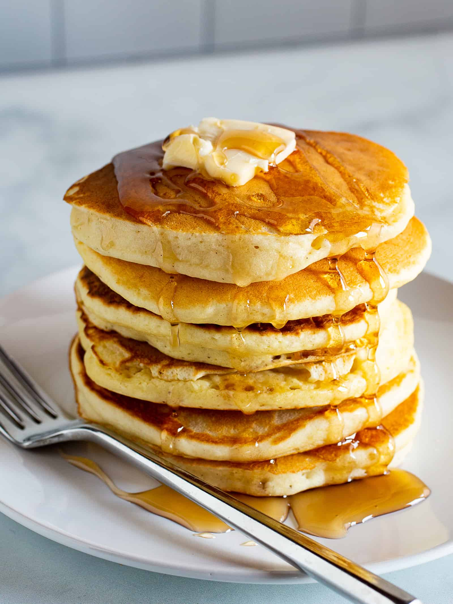

Pancake Recipe

Description
This recipe is an easy pancake recipe that doesn't require much time and thought, so that you can do it even in your lazy mornings
Ingredients
1 cup of Flour
2 tablespoons of Sugar
2 teaspoons of Baking powder
1 teaspoon of Salt
1 cup of Milk and 2 tablespoons of vegetable oil
1 Egg, beaten
Steps
Combine flour, sugar, baking powder, and salt in a large bowl.Make a well in the center, and pour in milk, oil and the egg. Mix until smooth.
Heat a lightly oiled griddle or frying pan over medium-high heat. Pur a scoop batter onto the griddle, using aproximately 1/4 cup for each pancake; cook untilbubles form and the edges are dry,1/2 min. Flip and cook until browned on the other side. Repeat.
Serve hot and enjoy!!